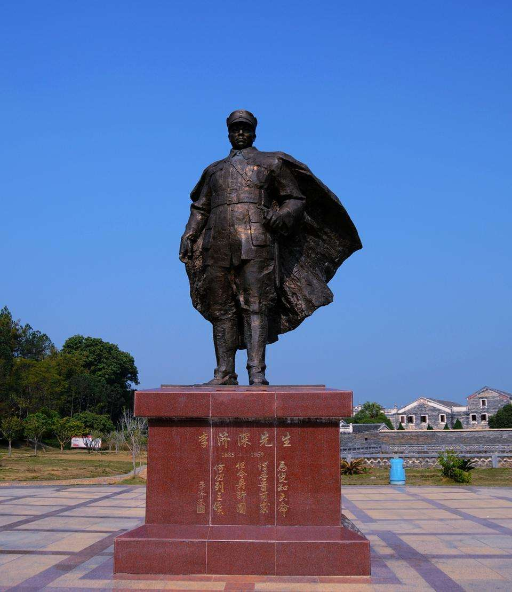
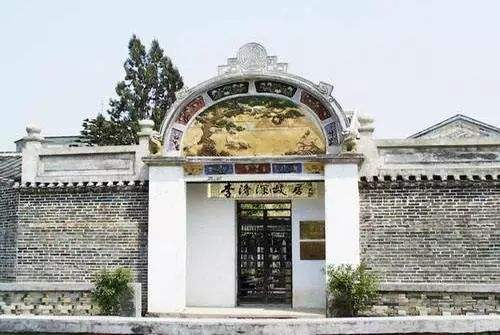
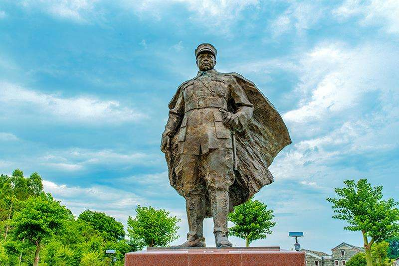

李济深故居
畅古今
李济深（1885-1959），字任潮，广西苍梧人。北京陆军大学毕业，曾任粤军第一师参谋长、代师长，国民革命军第四军军长，黄埔军校副校长，广东省政府主席



- 梧州李济深
- 李济深（1885年11月6日-1959年10月9日），字任潮，原名李济琛。广西梧州市龙圩区人。 黄埔军校副校长；原国民党高级将领。中国国民党革命委员会主要创始人，领导人之一 。 早年毕业于北京陆军大学。曾留学日本。历任粤军第一师参谋长、师长，西江善后督办、黄埔军校教练部主任。1925年任国民革命军第四军军长。北伐战争期间，任国民革命军总司令部参谋长、广东省政府主席、国民革命军第八路总指挥，留守广州。1927年曾参与蒋介石的反共活动。1933年联合十九路军蔡廷锴等在福建组织反蒋抗日的中华共和国人民革命政府。
- 梧州李济深